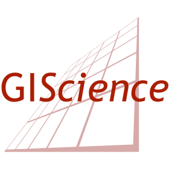

Open data and methods for assessing active mobility options: Routing in the context of bikeability and walkability#
Welcome to this tutorial at AGILE 2024 about walkability and bikeability, and how you can use some open source tools and data to assess this information.
This tutorial is split into several parts. In the sections OpenStreetMap, openrouteservice and NetAScore, you can find some general information about the data and tools that we will be using. The practical part of the tutorial can be found in the Tutorial section, which is made up of guided tutorials on how to use these tools and data in the context of walkability and bikeability. Feel free to tackle these individual tutorials in any order, though the integration one assumes that you have completed at least the NetAScore and openrouteservice sections.
During the hands on part, both organisers will be available to assist, and to answer any questions that you may have about the tools used.
Agenda for today#
Time |
Topic |
|---|---|
16:00 |
Introduction to the tutorial |
16:05 |
What is walk and bikeability, NetAScore, and openrouteservice |
16:30 |
Hands on tutorial |
17:45 |
Wrap up |
18:00 |
End of the session |
Who are we?#

Adam Rousell is a PostDoc researcher at HeiGIT gGmbH in the Smart Mobility team. HeiGIT, the Heidelberg Institute for Geoinformation Technology at Heidelberg University is a non-profit organisation aiming to improve knowledge and technology transfer from fundamental research in geoinformatics to practical applications. With focus areas of Smart Mobility, Big Spatial Data Analytics, Geoinformation for Humanitarian Aid, and Climate Action, HeiGITs vision is to build a better society and environment by improving open geoinformation and geoinformation technology. HeiGIT closely cooperates with the GIScience Research Group at Heidelberg University. This cooperation enables HeiGIT to realize innovative state-of-the-art solutions, incorporating cutting-edge knowledge and technology from both academic research and real-life technology.
Christian Werner is a PhD researcher at the Mobility Lab research group at the Department of Geoinformatics, University of Salzburg. With an origin in digital media application development and design, he graduated in Applied Geoinformatics with a master thesis on geostatistical assessment of cyclist stress detected from physiological measurements. His research revolves around infrastructure suitability for active modes, morphology and spatial configuration of transport networks, and resulting systemic effects on sustainable mobility. He is interested in the development of methods to assess and optimize network connectivity for active modes, as well as the interconnection between active mobility and public transport.
Get in touch
Adam Rousell adam.rousell@heigit.org
Christian Werner christian.werner@plus.ac.at
